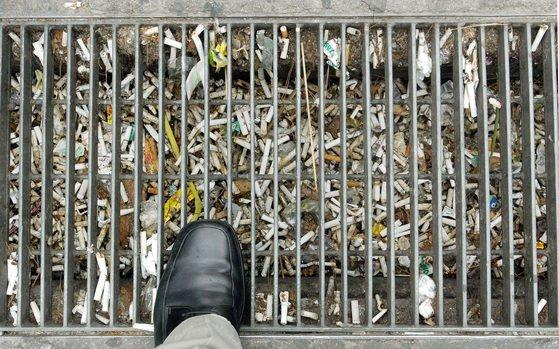
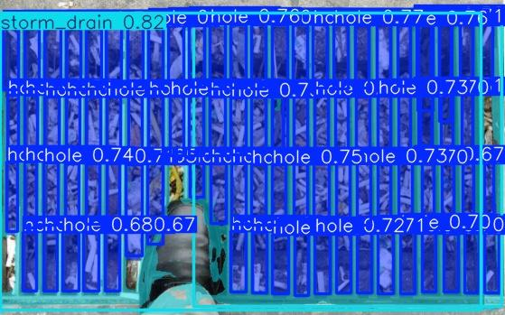
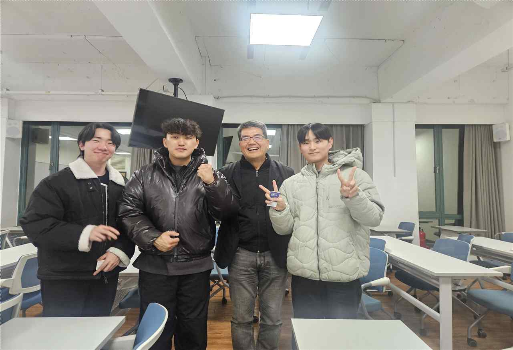
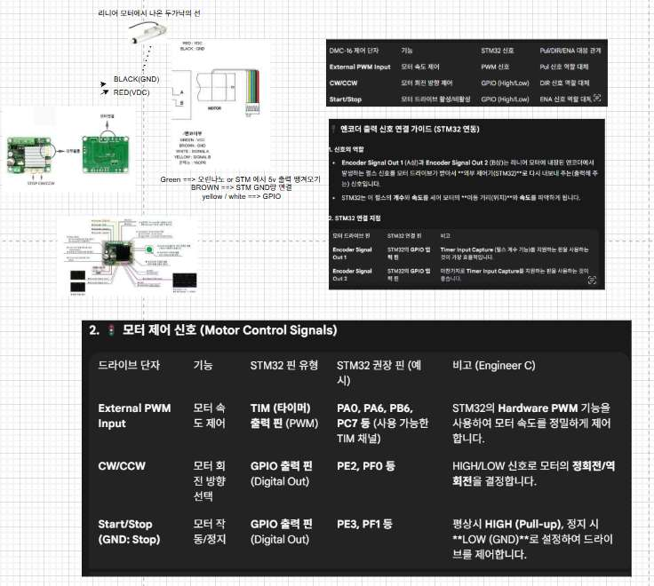
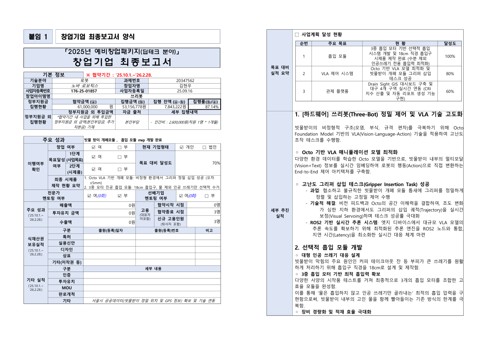
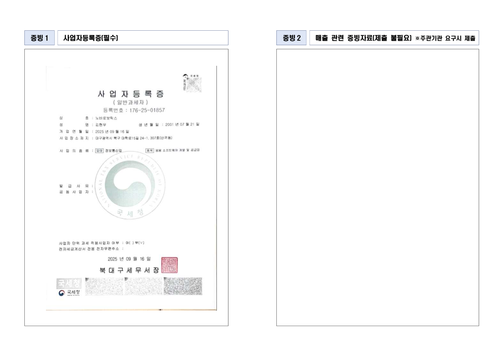

What drives me
위험하고 반복적인 일을
기술로 줄이는 데 관심이 있다
빗물받이 사진 4,000장 이상을 라벨링해야 했습니다. 장당 구멍이 평균 60개 이상이라
팀원 4명이 분담해도 총 360시간이 필요하다는 계산이 나왔습니다.
예비창업패키지 개발 기간 3~4개월 안에 현실적으로 불가능했습니다.
그래서 YOLOv8 + Mobile-SAM을 조합한 자동 라벨링 파이프라인을
직접 만들었습니다. 364장을 수작업으로 라벨링해 초기 모델을 학습시킨 뒤,
나머지 전체에 자동 라벨링을 적용하고 사람이 후검수하는 구조로 바꿨습니다.
반복 작업이 보이면 코드로 없애는 것이 저의 방식입니다.


펌웨어부터 IR 피칭까지,
전 구간을 직접 해봤다
STM32로 PWM·GPIO를 직접 설계하고, BLDC 드라이버·리니어 모터·XY 스테이지를
배선부터 펌웨어까지 작성했습니다. Jetson Orin Nano에서 YOLOv8 세그멘테이션으로
산출한 좌표가 ROS2를 거쳐 모터를 움직이는 한 줄짜리 파이프라인을 혼자 연결해봤습니다.
IR 피칭도 직접 했습니다. IT 업계 선배 경영진이 운영하는 전문 포럼·세미나에 초청받아
사업 비전을 발표했고, 프레스토 솔루션으로부터 동력 보조용 모터
현물 후원을 약속받았습니다. 강남구청 공무원과 실무 미팅을 통해 시범 도입(Pilot)
가능성을 타진했고, 모교 총동창회 50~70대 선배님들 앞에서도 무대에 올랐습니다.
시행착오를 전 구간에서 직접 겪어봤기 때문에, 어느 레이어에서 무엇이 막히는지 압니다.



실제로 작동하는 큰 구조는
작은 단위의 설계에서 시작된다고 배웠다
예비창업패키지를 수행하면서 기술개발만으로는 일이 끝나지 않는다는 것을 직접 경험했습니다.
세금 계산, 물품 구매와 영수증 처리, 발표 PPT 제작, 시행착오 기록, 팀원과의 소통, 홍보까지
모두 포함해 하나의 프로젝트가 굴러간다는 것을 배웠습니다.
하지만 이 모든 과정을 3개월 안에 혼자서 동시에 해결하려 하자 분명한 한계가 드러났고,
서류를 다시 쓰고 계산을 다시 맞추고 기능을 반복 수정하는 시행착오도 여러 번 겪었습니다.
그 과정을 통해 큰 구조를 한 번에 해결하려 하기보다,
반복적이고 소모적인 작은 작업부터 분리해 해결해야 전체 흐름이 살아난다는 점을 배웠습니다.
그래서 PPT 자동화, 서류 작성 자동화, 랜딩페이지 제작처럼 작은 작업 단위부터 정리하는
구조를 만들었고, 그 결과 시간을 크게 줄이면서
예비창업패키지 우수기업 선정이라는 결과로 이어졌습니다.

